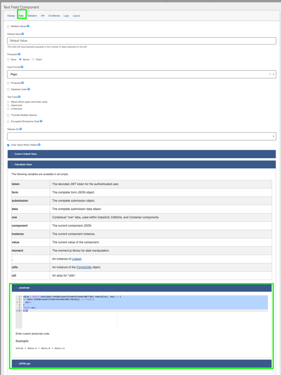
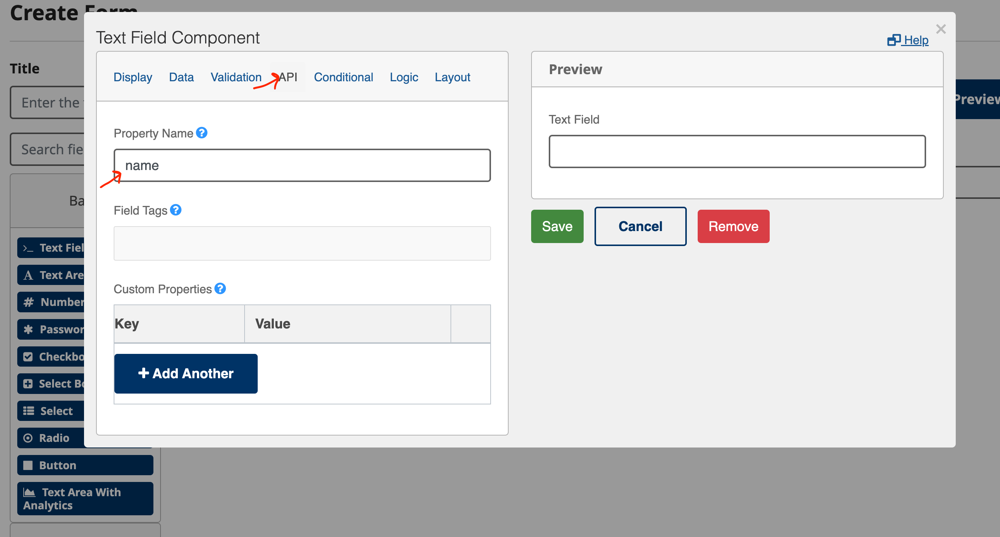

Forms
Table of Contents
Calculated Form Values
If you would like a certain form field to have a calculated value based on the input from previous fields it could potentially require the use of some custom javascript code.
These calculations can be made by selected the field you wish to contain the calculated value and clicking on it's gear icon. - Navigate to the Data tab at the top - Scroll down to the Calculated Value section and click to expand - This will show some general instructions on how to add calculations

Examples
Telework Calculated "Number of days teleworking in a week"
Calculate a value based on the number of boxes checked representing days of the week:
The following code snippet checks each checkbox contained within the theEmployeesScheduleWillBe field of the form and adds it to the value of this field if it has been checked.
value = Object.keys(data.theEmployeesTeleworkScheduleWillBe).reduce((acc, key) => {
if (data.theEmployeesTeleworkScheduleWillBe[key] === true) {
acc++
}
return acc;
},0)
How to auto-populate form fields with the user data
If you would like to automatically populate a form's field with the user's data, you can do so by adding one of the pre-defined names to a field in your form. Follow these steps to add the user's data to a field:
Step 1: Look at the pre-defined values along with their names in table below or from /forms-flow-api/src/formsflow_api/models/employee_data.py file. These values are available to all forms.
Step 2: When creating forms, in the Form builder dialog for a component, under API tab, you can set the Property Name of a field. If you want this field to be pre-populated with the user data simply add one of the pre-defined names (found in the last step) as a Property Name.
Step 3: If you want to use one piece of user data more than once in a form, you can append _ to the property name of your field. For example, if you want to use the user's name second time in a form, you can set the Property Name of the field to be name_2.
| Property Name | Description |
|---|---|
name |
first and last name of employee as retuned from ODS |
firstName |
first name of employee |
lastName |
last name of employee |
displayName |
A calculated value based on firstName + lastName of employee |
email |
email of employee |
address1 |
home address1 of employee |
address2 |
home address2 of employee |
officePhone |
office phone of employee |
empId |
employee id of employee |
positionTitle |
position title of employee |
depId |
department id of employee |
officeAddress1 |
office address1 of employee |
officeAddress2 |
office address2 of employee |
officeCity |
office city of employee |
officeCountry |
office country of employee |
officePostal |
office postal code of employee |
officeStateprovince |
office state or province of employee |
organization |
organization of employee |
divisionLevel2 |
level 2 branch/division of employee |
supervisorName |
name of employee's supervisor |
supervisorEmail |
email of employee's supervisor |
supervisorPositionTitle |
position title of employee's supervisor |

Uploading a form
Migrating a form to a new environment
- For this work, you need a
designerrole in the two environments. - In the first environment you are migrating the form from, download the form by finding the form in the list of forms and clicking
Download Form. The form will be saved inJSONformat on your computer. - Go to the target environment:
- Upload the downloaded form on the
Formspage through theUpload Formbutton.- If there is no previous version of that form in the target environment, the new form will appear in the list of forms.
- If there is a previous version of that form in the target environment, the new form overwrites the older one. Please note that you don't see any warnings that you're overwriting.
- Add the necessary workflow and then publish the form if that is the desired behaviour.
Creating a duplicate form
- For this work you need a
designerrole. - Download the form you want to duplicate and save it to your computer. The form will be saved in
JSONformat on your computer. - Open the
JSONfile (in a text editor or an online text editor compatible withJSONformat) and change the following fields. For example, if the form you're duplicating is calledTeleworkthen change the following fields and save the file: title: change it to something else likeTelework-test-1.name: change it to something else likeTelework-test-1.path: change it to something else likeTelework-test-1.- Upload the file to the
Formspage through theUpload Formbutton. You the will see the new form along with the old form in the list of forms. - Add the necessary workflow and then publish the form if that is the desired behaviour. You can assign the same workflow to the duplicated form or assign a different workflow.